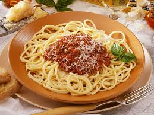
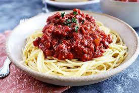
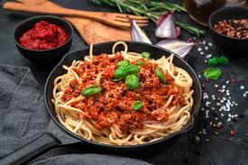
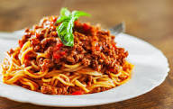

| Dera's Kitchen |
| SPAGHETTI BOLOGNESE |
The history of the bolognese sauce started in the late 18th century. The first mention of the term “alla Bolognese” appeared in Pellegrino Artusi's cookbook. Historians generally agree that the dish originated in Imola, a city that sits just west of Bologna, and is home to the earliest documented ragù sauce. Bolognese sauce is an italian dish made up of meat-based tomato sauce spiced with herbs and served with spaghetti. Hence, Spaghetti Bolognese is basically serving spaghetti with the Bolognese sauce. The bolognese sauce has evolved over the years, with every cook putting their own spin on it. |
INGREDIENTS
|
DIRECTIONS
|
Copyright © 2022 Dera's Kitchen. All Rights Reserved |